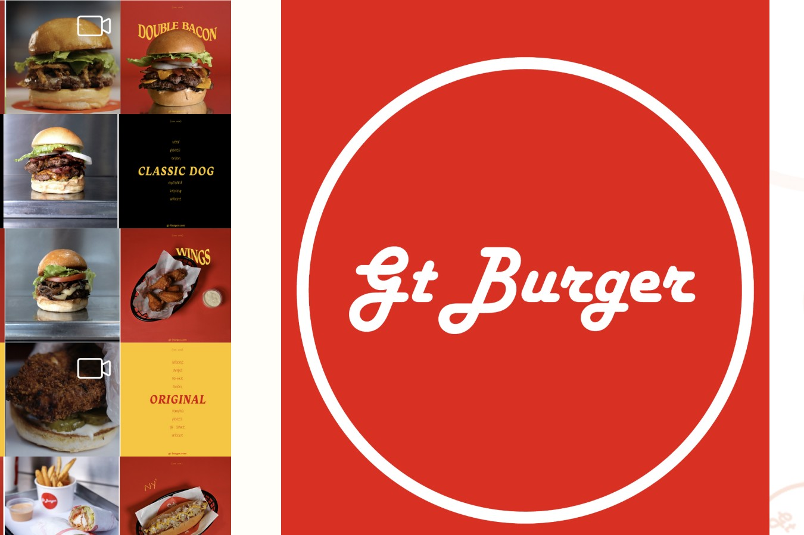
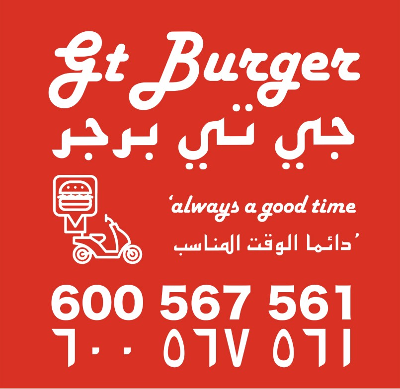

Project 07 / 08 — F&B, End-to-End
GTB — Brand & Digital Build
Client
GTB, Dubai
Role
End-to-End Brand & UX
Sector
Food & Beverage
Year
2018 — 2024
Context
No name. No visual identity. No website. No presence on delivery apps. I designed and built all of it.
GTB was a new burger concept being built from scratch in one of the most competitive digital food markets in the world. Over seven years I created and maintained every part of its digital and physical experience.
Let There
Be Meat.
100% Angus Beef — Founders Est. 2012
Seven Years, One Person
The first year was entirely design and build. Every year after was design operations, tuned week to week.
Naming & Identity
Launch — Menus, Website, Uniforms
Weekly Design Ops, Pricing & Campaigns
Handover — Independent Operation
Deliverables
Naming & Identity
Brand name, mark, tone of voice, built from nothing.
Menus & Touchpoints
Bilingual Arabic/English menus, uniforms, in-store assets.
Responsive Website
Built and optimised for conversion — peaked at 11.3%.
Delivery Platform Strategy
Dynamic pricing and campaigns across six UAE delivery apps.
Notion Design System
Templates, editable promo assets and documentation for the team.
Weekly Design Operations
Engagement tracking, pricing tests, dynamic discounting.
The Identity, In Use

Logotype badge

Delivery platform creative — bilingual UAE market
Impact
11.3%
Peak Website Conversion
+220%
Delivery Visibility, Year One
−60%
Manual Content Operations